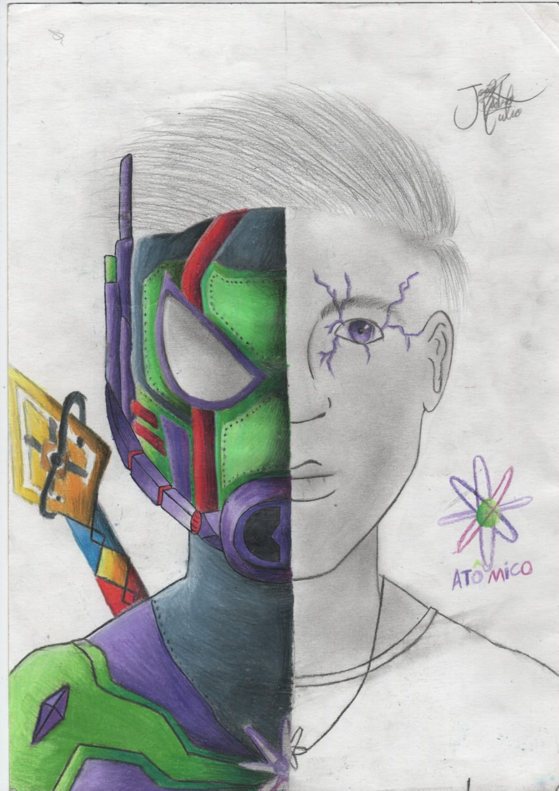
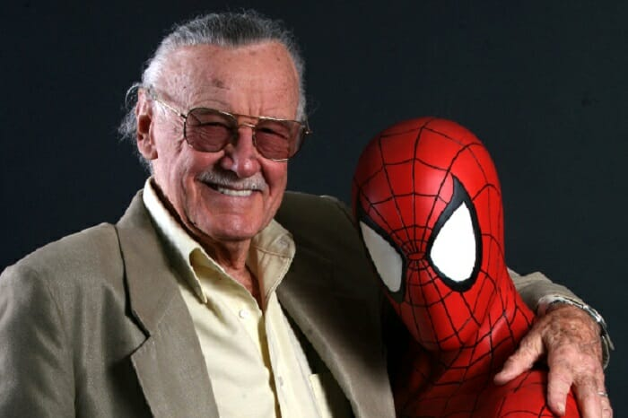

A história do herói, quem é Atômico?
Atômico é um herói inventado por mim, João Pedro Lulio. É um habitante do planeta Atomus (também inventado por mim), foi mandado para fora do seu planeta ainda quando criança para ser salvo do Galactos, seu pai ao manda-lo para fora mandou junto a Jóia do Poder, onde estava concentrado todo o poder do pai de atômico, o Celestial da jóia do poder.
Ao chegar na terra, 30 anos depois da destruição do seu planeta, atômico ja é logo abduzido por Yondu Udonta, que veio para a terra a procura de Peter Quill. Mesmo com o engano, Yondu cria atomico juntamente ao seu "outro filho" Peter Quill, e logo após atomico ter mais idade, Yondu o apresenta a jóia, e diz que atomico precisa arrumar uma arma para conduzir o poder, isso seria útil para os saqueadores. Atômico então vai para Nidavellir, onde as armas mais poderosas do universo são forjadas, ao chegar la, atômico encontra Eitri, um dos anões gigantes que forjam as armas e armaduras. Após um tempo, Eitri entrega para atômico dois bastões com o poder distribuído, e uma armadura, deixada pelo seu pai para ser usada por atomico quando ele tivesse 65 anos (que para anos terráqueos são uns 14). Ao tocar no bastão que continha o poder da jóia, atómico ouve um sussurro na sua mente dizer "dois saltos a noroeste", atomico aproveita os seus novos poderes e vai voando para lá, ele encontra um portal enorme, que está aberto no céu de nova york, então ele desce e se junta aos vingadores nessa batalha. Fim.
Desenho do Atômico com, e sem armadura (feito por mim).

Um mais sobre a criação do site
Esse site foi criado por um grande fã da marvel, do Stan Lee e de tudo o que acompanha, resumidamente eu criei o Atômico para me encaixar no UCM (Universo Cinametográfico da Marvel), e tentei o criar sem mecher muito na hisória canonica, mesmo colocando Atômico como um dos principais.
Stan Lee, o meu ídolo

Stan Lee (1922-2013) foi um editor, roteirista e empresário norte-americano, um dos mais notáveis criadores de histórias em quadrinhos, sendo corresponsável por grandes super-heróis e vilões da Marvel Comics, como o Homem-Aranha, Thor, Hulk, X-Men, Pantera Negra, o Demolidor, Homem de Ferro e Quarteto Fantástico.
Stanley Martin Lieber, conhecido como Stan Lee, nasceu em Manhattan, Nova Iorque, Estados Unidos, no dia 28 de dezembro de 1922. Filho de judeus imigrados da Romênia começou a trabalhar cedo. Desde jovem gostava de escrever e na adolescência planejava começar um romance.